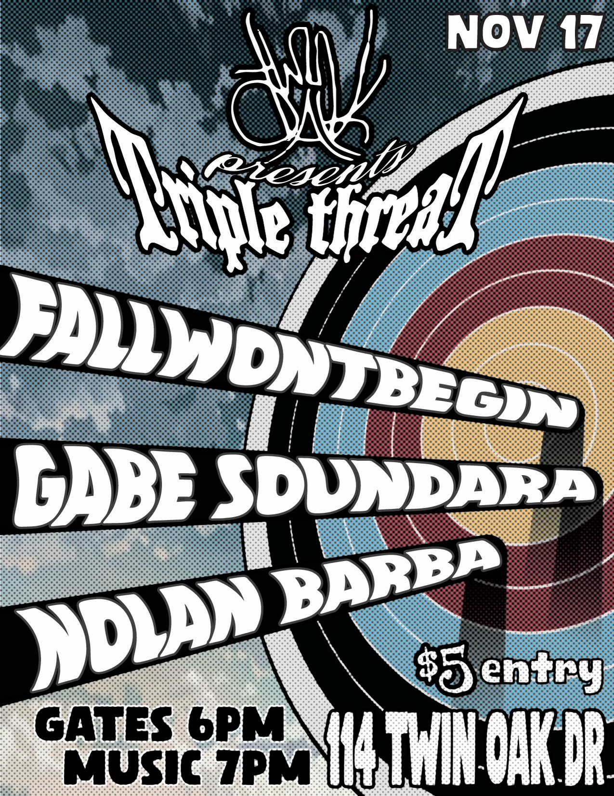
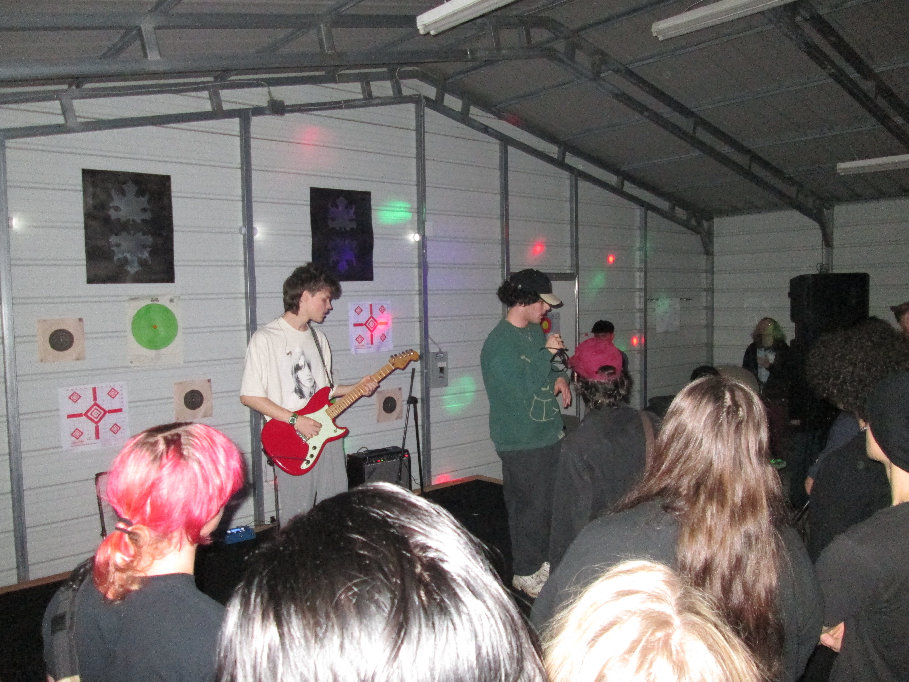
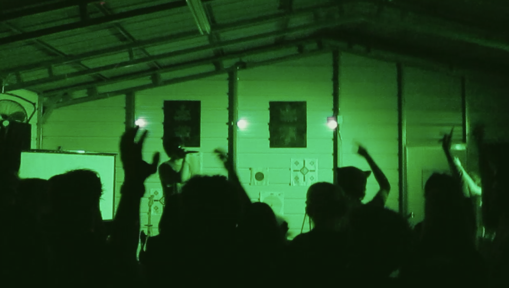

DIY concert
Triple Threat
Hosted one week after Over the Leaves, Triple Threat needed a fast turnaround and a completely different feel. I quickly brainstormed a new design for the space while helping coordinate the night.
I also performed my own music—an especially meaningful experience to play a set while producing the event.



Video recap